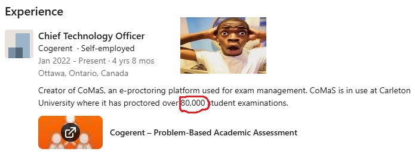
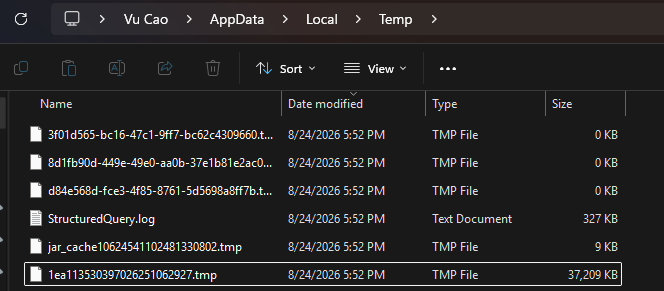
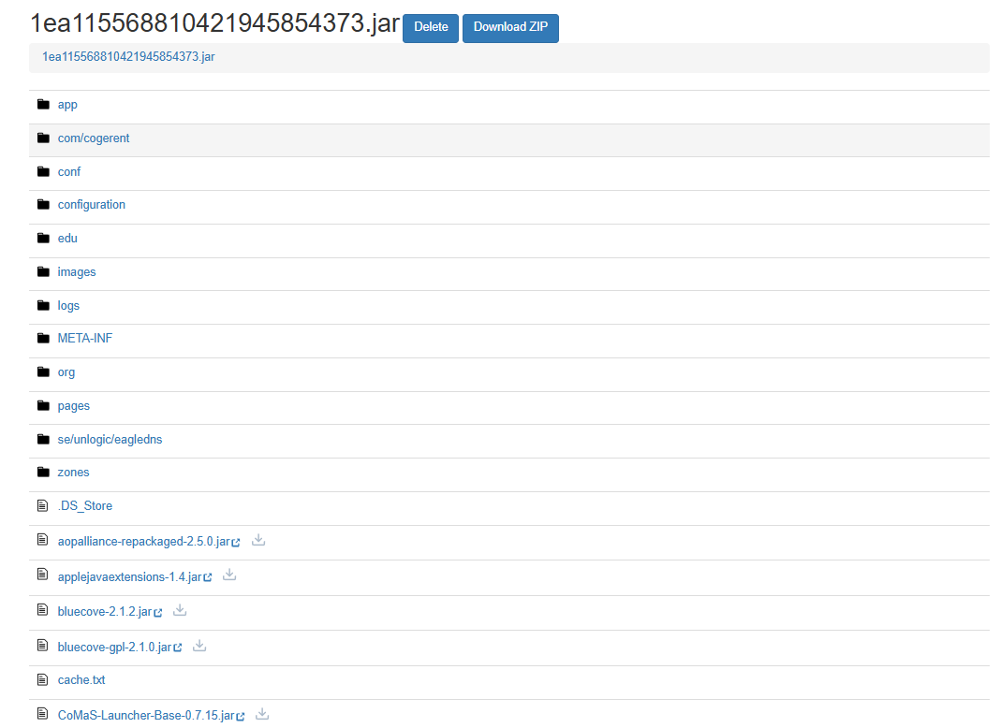
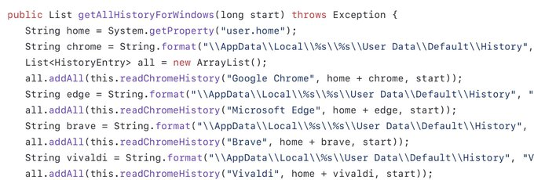

Reverse engineering CoMaS
What is CoMaS?
CoMas, is Carleton University’s proctoring spy- I mean software, used for online exams. It has been used in over 80,000 student examinations.

Carleton says its CoMaS e-proctoring software is not invasive. From the CoMaS FAQ:
- It does not look at any files on your computer that are not open.
- It does not record or look inside any of your files and documents, except for files inside the CoMaS folder that are generated on the desktop each time you log in.
- It does not record any information from your browser history, cache, or cookies.
- It does not look at network traffic or probe devices with which you communicate.
- It does not record which applications you have installed. It records whether an application modifies a document or is visible on screen, without recording the content of any files.
But, is this really true?
Reversing CoMaS
(done on Windows)
CoMaS is installed in C:\Program Files\CoMaS\ in the user's home directory. It is an unobfuscated, unencrypted Java application to launch the app. After launch, it fetches an encrypted JAR from the server, decrypts it, and runs it.

If you know anything about Java, you'll know that deobfuscating it is extremely trivial, as it compiles to bytecode and not machine code. Our first (and only) challenge is that the payload .jar, is not actually a .jar. The fetched payload CoMaS-0.8.76.jar does not start with the normal JAR/ZIP signature.
My first thought was to create a Java agent to intercept the decrypted payload as it is loaded in memory and save it to a file. This is a very easy and commonly seen method in reverse engineering, but turns out it wasn't even required.

Yeah. The decrypted version is simply stored in %LOCALAPPDATA%\Temp. You can literally just rename this to .jar, and your work is done. From here, use any Java decompiler on this unobfuscated file to see all the source code.

You can do this yourself too! Open CoMaS, select "comas-its4.cogerent.com" as the server, then open %LOCALAPPDATA%\Temp, copy the newly created .tmp file and rename it to .jar. Congratulations, you just reverse-engineered the CoMaS application.
Promises sometimes are just words
According to Carleton's website, CoMaS "does not record information from your browser history, cache or cookies", it "does not record or look inside any of your files and documents", and "it does not look at network traffic and does not probe devices".
But guess what, it does just that!.

Not being transparent and straight up lying about what software does is unacceptable. It is troubling that CoMas seems to record browser history of students' devices, which directly contradicts what Carleton says about the software.
bu- but, isn't this illegal??
I believe that Reverse Engineering is NOT against the EULA, for 2 main reasons below.
- The EULA is not shown to the user properly.
- The EULA does not prohibit reverse engineering.
Reason 1: The EULA is not accessible anywhere on the website, the instruction guide, during the download itself, during the installation process, or even after launching the program. No EULA is ever shown to the user. No EULA is bundled with the software either after it is installed.
In fact, a similar GitHub repository from 6 years ago had done the same thing: TASelwyn/CoMaS-Carleton. In the about section: "CoMaS client setup, no eula, no tos. Can't say it's illegal to redistribute if there's nothing saying against it."
Below are videos of me going through the steps to install the software, checking all possible pages where an EULA might be mentioned, and not finding any. I had clicked the link directly from the email, read the PDFs linked, and various searches for CoMas on Google to no avail.
If one were to dig carefully, there is a document that is accessible only from the email from an outdated instruction guide that you likely will not be able to find from internet searches. It mentions an EULA that must be accepted for each exam.
There are several things:
- If it must be accepted before every exam, it is reasonable to assume that the EULA is in effect during the exam only.
- It is entirely possible to go through the entire software download, doing your absolute due diligence and checking for any EULA that might exist on the website, the download, the installation process, or even after launching the app itself without ever seeing the EULA. In fact, I had uninstalled the app, then reinstalled the app to reverse engineer it without ever seeing the EULA.
- In fact, the only reason I was able to actually find what the EULA actually is is from the fact that I had reverse engineered the program, and saw what the exam text led to.
Reason 2: There are flaws with the EULA itself too.
"By clicking the 'I Agree' button, downloading or using the Application, You are agreeing to be bound by the terms and conditions of this Agreement. If You do not agree to the terms of this Agreement, do not click on the 'I Agree' button, do not download or do not use the Application."
This implies that the EULA is shown during the download stage, or even application launch stage, but this is not true. I was able to reverse engineer the software without seeing the EULA and agree to it.
"You agree not to, and You will not permit others to: License, sell, rent, lease, assign, distribute, transmit, host, outsource, disclose or otherwise commercially exploit the Application or make the Application available to any third party."
This doesn't seem to prohibit reverse engineering. It prohibits the user to "commercially exploit" the application, which I did not do. As for "make the Application available to any third party.": The code I shared on GitHub is merely my decompiled version of the code, the application is not able to be run from decompiled code unless you have advanced knowledge and familiarity with Java development.
Video discussing the EULA in detail
Trust is part of the user experience
What bothers me most is the communication. Carleton's privacy statements say that CoMaS does not record or look at browser history, network traffic, or running applications. The code appears to tell a different story.
That is not a small technicality. If a university says that its software does not access something, and the software accesses it anyway, students should probably be told. It is also not great when the software is proprietary and students are forced to install it on their personal computers without a clear explanation of what it can inspect.
Software can be technically functional and still be a terrible solution. Online exams are difficult to manage, but "it is only invasive for a little while" is not a substitute for transparency. At the very least, students should know what is being checked, what is being uploaded, and who can see it.
So when are they going to communicate this with us? Your move, Carleton.
<- Back to blog